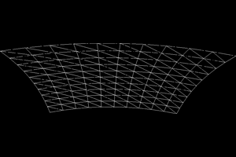
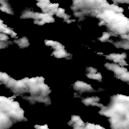
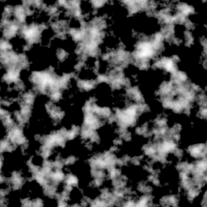
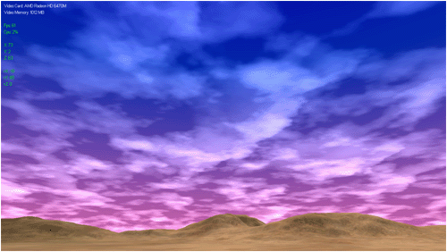

Tutorial 11: Bitmap Clouds

This DirectX 11 terrain tutorial will cover how to implement clouds. The particular implementation will be bitmap clouds which is one of the simpler methods to use. The code in this tutorial builds off the previous sky dome tutorial as the sky dome is required for coloring the clouds.
To implement clouds we are going to first need some geometry to render the cloud bitmaps onto. The ideal geometry to use is a plane that is slightly curved. You can create one in a modeling program but since they are very easy to build we will implement the geometry in the code so that we can modify it as needed. The plane model will be encapsulated in a class called SkyPlaneClass.
And just like the sky dome in the previous tutorial we will always center the sky plane at the camera's location and place it just slightly above us. This way as the camera moves in the world the sky plane moves with it. For rendering the sky plane we will turn off the depth buffer so that it overwrites and combines with everything behind it giving the illusion that the geometry is much larger than what it actually is. This was the same approach used with the sky dome. And since we are generating the plane in the code we won't need to turn off back face culling as we will create the plane facing downwards.

Note that the edges of the sky plane will be visible so you will need to adjust for this in your own code. Most people deal with the issue by ensuring there is a surrounding band of terrain that the camera will never go above so the edges are hidden. Other people use walls, buildings, and so forth. Another approach is to use a third alpha texture to create a fade effect at the edges so it looks like it blends into the horizon but it doesn't always look correct when you do that.
The clouds that we will be using are going to be two different bitmaps that we will render onto the sky plane. The reason that we are using two instead of one is so that we can translate them at different speeds creating the illusion of two separate cloud layers with one higher than the other. The speed you translate each at is key in creating the perception that one layer is much higher than the other, even though they are rendered onto the same geometry.


To color the clouds we simply turn on additive blending and make sure that the sky dome is rendered first. This way the clouds will blend with the sky dome's color.
We will begin the code section by examining the SkyPlaneClass first.
Skyplaneclass.h
The SkyPlaneClass encapsulates everything related to the plane used for rendering the clouds. It holds the geometry for the sky plane, the two bitmaps textures for the clouds, and all the variables for the shader that relate to how to draw the sky plane.
////////////////////////////////////////////////////////////////////////////////
// Filename: skyplaneclass.h
////////////////////////////////////////////////////////////////////////////////
#ifndef _SKYPLANECLASS_H_
#define _SKYPLANECLASS_H_
//////////////
// INCLUDES //
//////////////
#include <d3d11.h>
#include <d3dx10math.h>
///////////////////////
// MY CLASS INCLUDES //
///////////////////////
#include "textureclass.h"
////////////////////////////////////////////////////////////////////////////////
// Class name: SkyPlaneClass
////////////////////////////////////////////////////////////////////////////////
class SkyPlaneClass
{
private:
The SkyPlaneType structure is used for storing the sky plane geometry. We generate position and texture coordinates for the plane and then store them in an array of SkyPlaneType. There are no normals since the clouds use the sky dome for color and lighting appearance.
struct SkyPlaneType
{
float x, y, z;
float tu, tv;
};
The VertexType requires position and texture coordinates for rendering the sky plane.
struct VertexType
{
D3DXVECTOR3 position;
D3DXVECTOR2 texture;
};
public:
SkyPlaneClass();
SkyPlaneClass(const SkyPlaneClass&);
~SkyPlaneClass();
bool Initialize(ID3D11Device*, WCHAR*, WCHAR*);
void Shutdown();
void Render(ID3D11DeviceContext*);
void Frame();
int GetIndexCount();
ID3D11ShaderResourceView* GetCloudTexture1();
ID3D11ShaderResourceView* GetCloudTexture2();
float GetBrightness();
float GetTranslation(int);
private:
bool InitializeSkyPlane(int, float, float, float, int);
void ShutdownSkyPlane();
bool InitializeBuffers(ID3D11Device*, int);
void ShutdownBuffers();
void RenderBuffers(ID3D11DeviceContext*);
bool LoadTextures(ID3D11Device*, WCHAR*, WCHAR*);
void ReleaseTextures();
private:
The m_skyPlane array is used to hold the plane geometry.
SkyPlaneType* m_skyPlane; int m_vertexCount, m_indexCount; ID3D11Buffer *m_vertexBuffer, *m_indexBuffer;
The sky plane will use two cloud textures that are rendered to it.
TextureClass *m_CloudTexture1, *m_CloudTexture2;
The brightness of the clouds is stored here and set in the pixel shader during rendering.
float m_brightness;
The cloud location and speed are stored in these two arrays.
float m_translationSpeed[4]; float m_textureTranslation[4]; }; #endif
Skyplaneclass.cpp
//////////////////////////////////////////////////////////////////////////////// // Filename: skyplaneclass.cpp //////////////////////////////////////////////////////////////////////////////// #include "skyplaneclass.h"
We set the class private member pointers to null in the class constructor.
SkyPlaneClass::SkyPlaneClass()
{
m_skyPlane = 0;
m_vertexBuffer = 0;
m_indexBuffer = 0;
m_CloudTexture1 = 0;
m_CloudTexture2 = 0;
}
SkyPlaneClass::SkyPlaneClass(const SkyPlaneClass& other)
{
}
SkyPlaneClass::~SkyPlaneClass()
{
}
The Initialize function is where we do all the setup for the sky plane. It takes as input the two cloud texture file names as well as the Direct3D device.
bool SkyPlaneClass::Initialize(ID3D11Device* device, WCHAR* textureFilename1, WCHAR* textureFilename2)
{
int skyPlaneResolution, textureRepeat;
float skyPlaneWidth, skyPlaneTop, skyPlaneBottom;
bool result;
Here is where we set the sky plane parameters that are used for generating the plane geometry. The skyPlaneResolution is used for specifying how many quads that sky plane should be composed of in the X and Z direction, increasing this value makes it higher poly and smoother. The skyPlaneWidth is the length of the plane.
The skyPlaneTop and skyPlaneBottom represent the height and base of the curved plane. The bottom four corners of the plane will be at skyPlaneBottom and the center of the plane will be at skyPlaneTop. All other points are interpolated between those two values.
The textureRepeat value determines how many times to repeat the texture over the sky plane. This is used to generate the UV coordinates. Note that a single 256x256 texture mapped just once over the sky plane will look fairly pixelated, therefore you either want to increase the texture size or map it multiple times to reduce how pixelated it looks. Note that the higher the resolution this program runs at the higher resolution the texture will need to be to look non-pixelated (likewise how many times it needs to be repeated).
// Set the sky plane parameters. skyPlaneResolution = 10; skyPlaneWidth = 10.0f; skyPlaneTop = 0.5f; skyPlaneBottom = 0.0f; textureRepeat = 4;
Setting the brightness is important for making clouds look realistic when using bitmaps that range from just 0 to 255. The brightness value lowers how white the clouds are which allows you to give them more of a faded look just like real clouds have. The value range here is from 0.0f to 1.0f. I have set it to 0.65f so that the clouds are at 65% brightness.
// Set the brightness of the clouds. m_brightness = 0.65f;
The translation speed is how fast we translate the cloud textures over the sky plane. Each cloud can be translated on both the X and Z axis. There are two textures so we store the dual speed for both in a 4 float array.
// Setup the cloud translation speed increments. m_translationSpeed[0] = 0.0003f; // First texture X translation speed. m_translationSpeed[1] = 0.0f; // First texture Z translation speed. m_translationSpeed[2] = 0.00015f; // Second texture X translation speed. m_translationSpeed[3] = 0.0f; // Second texture Z translation speed.
We also store the current translation for the two textures and provide it to the pixel shader during rendering.
// Initialize the texture translation values. m_textureTranslation[0] = 0.0f; m_textureTranslation[1] = 0.0f; m_textureTranslation[2] = 0.0f; m_textureTranslation[3] = 0.0f;
Once all our values are set we then create the sky plane, load it into a vertex and index buffer, and then load the textures. Note that I would generally make all the sky plane parameters as input to the Initialize function but it is easier for the tutorial explanation and for modifying them at first by having them inside the function for now.
// Create the sky plane.
result = InitializeSkyPlane(skyPlaneResolution, skyPlaneWidth, skyPlaneTop, skyPlaneBottom, textureRepeat);
if(!result)
{
return false;
}
// Create the vertex and index buffer for the sky plane.
result = InitializeBuffers(device, skyPlaneResolution);
if(!result)
{
return false;
}
// Load the sky plane textures.
result = LoadTextures(device, textureFilename1, textureFilename2);
if(!result)
{
return false;
}
return true;
}
The Shutdown function is where we release the sky plane, the buffers, and the textures.
void SkyPlaneClass::Shutdown()
{
// Release the sky plane textures.
ReleaseTextures();
// Release the vertex and index buffer that were used for rendering the sky plane.
ShutdownBuffers();
// Release the sky plane array.
ShutdownSkyPlane();
return;
}
The Render function calls RenderBuffers to put the sky plane geometry on the graphics pipeline for drawing.
void SkyPlaneClass::Render(ID3D11DeviceContext* deviceContext)
{
// Render the sky plane.
RenderBuffers(deviceContext);
return;
}
The frame processing that we do for the sky plane is the cloud texture translation which simulates movement of the clouds across the sky. The coordinates are translated according to the speed given for that direction. Index 0 and 1 is for the X and Z on the first cloud. Index 2 and 3 is for the X and Z on the second cloud. We also truncate the values so they never go over 1.0f. Note that if you unlock the vsync the clouds will go at a speed according to the new frame rate, to avoid that you should pass in the frame time and adjust the translation accordingly.
void SkyPlaneClass::Frame()
{
// Increment the translation values to simulate the moving clouds.
m_textureTranslation[0] += m_translationSpeed[0];
m_textureTranslation[1] += m_translationSpeed[1];
m_textureTranslation[2] += m_translationSpeed[2];
m_textureTranslation[3] += m_translationSpeed[3];
// Keep the values in the zero to one range.
if(m_textureTranslation[0] > 1.0f) { m_textureTranslation[0] -= 1.0f; }
if(m_textureTranslation[1] > 1.0f) { m_textureTranslation[1] -= 1.0f; }
if(m_textureTranslation[2] > 1.0f) { m_textureTranslation[2] -= 1.0f; }
if(m_textureTranslation[3] > 1.0f) { m_textureTranslation[3] -= 1.0f; }
return;
}
GetIndexCount returns the number of indexes in the index buffer.
int SkyPlaneClass::GetIndexCount()
{
return m_indexCount;
}
GetCloudTexture1 returns the first cloud texture resource.
ID3D11ShaderResourceView* SkyPlaneClass::GetCloudTexture1()
{
return m_CloudTexture1->GetTexture();
}
GetCloudTexture2 returns the second cloud texture resource.
ID3D11ShaderResourceView* SkyPlaneClass::GetCloudTexture2()
{
return m_CloudTexture2->GetTexture();
}
The GetBrightness function returns the current brightness value that we want applied to the clouds in the pixel shader.
float SkyPlaneClass::GetBrightness()
{
return m_brightness;
}
The GetTranslation function returns the texture translation value for the given index.
float SkyPlaneClass::GetTranslation(int index)
{
return m_textureTranslation[index];
}
InitializeSkyPlane is where we build the geometry for the sky plane. We first create an array to hold the geometry and then we setup the increment values needed to build the sky plane in the for loop. Then we run the for loop and create the position and texture coordinates for each vertex based on the increment values. This process builds the curved plane that we will use to render the clouds onto.
bool SkyPlaneClass::InitializeSkyPlane(int skyPlaneResolution, float skyPlaneWidth, float skyPlaneTop, float skyPlaneBottom, int textureRepeat)
{
float quadSize, radius, constant, textureDelta;
int i, j, index;
float positionX, positionY, positionZ, tu, tv;
// Create the array to hold the sky plane coordinates.
m_skyPlane = new SkyPlaneType[(skyPlaneResolution + 1) * (skyPlaneResolution + 1)];
if(!m_skyPlane)
{
return false;
}
// Determine the size of each quad on the sky plane.
quadSize = skyPlaneWidth / (float)skyPlaneResolution;
// Calculate the radius of the sky plane based on the width.
radius = skyPlaneWidth / 2.0f;
// Calculate the height constant to increment by.
constant = (skyPlaneTop - skyPlaneBottom) / (radius * radius);
// Calculate the texture coordinate increment value.
textureDelta = (float)textureRepeat / (float)skyPlaneResolution;
// Loop through the sky plane and build the coordinates based on the increment values given.
for(j=0; j<=skyPlaneResolution; j++)
{
for(i=0; i<=skyPlaneResolution; i++)
{
// Calculate the vertex coordinates.
positionX = (-0.5f * skyPlaneWidth) + ((float)i * quadSize);
positionZ = (-0.5f * skyPlaneWidth) + ((float)j * quadSize);
positionY = skyPlaneTop - (constant * ((positionX * positionX) + (positionZ * positionZ)));
// Calculate the texture coordinates.
tu = (float)i * textureDelta;
tv = (float)j * textureDelta;
// Calculate the index into the sky plane array to add this coordinate.
index = j * (skyPlaneResolution + 1) + i;
// Add the coordinates to the sky plane array.
m_skyPlane[index].x = positionX;
m_skyPlane[index].y = positionY;
m_skyPlane[index].z = positionZ;
m_skyPlane[index].tu = tu;
m_skyPlane[index].tv = tv;
}
}
return true;
}
The ShutdownSkyPlane function releases the array that was holding the sky plane geometry.
void SkyPlaneClass::ShutdownSkyPlane()
{
// Release the sky plane array.
if(m_skyPlane)
{
delete [] m_skyPlane;
m_skyPlane = 0;
}
return;
}
InitializeBuffers loads the array that was holding the sky plane geometry into a vertex and index buffer so that it can be rendered.
bool SkyPlaneClass::InitializeBuffers(ID3D11Device* device, int skyPlaneResolution)
{
VertexType* vertices;
unsigned long* indices;
D3D11_BUFFER_DESC vertexBufferDesc, indexBufferDesc;
D3D11_SUBRESOURCE_DATA vertexData, indexData;
HRESULT result;
int i, j, index, index1, index2, index3, index4;
// Calculate the number of vertices in the sky plane mesh.
m_vertexCount = (skyPlaneResolution + 1) * (skyPlaneResolution + 1) * 6;
// Set the index count to the same as the vertex count.
m_indexCount = m_vertexCount;
// Create the vertex array.
vertices = new VertexType[m_vertexCount];
if(!vertices)
{
return false;
}
// Create the index array.
indices = new unsigned long[m_indexCount];
if(!indices)
{
return false;
}
// Initialize the index into the vertex array.
index = 0;
// Load the vertex and index array with the sky plane array data.
for(j=0; j<skyPlaneResolution; j++)
{
for(i=0; i<skyPlaneResolution; i++)
{
index1 = j * (skyPlaneResolution + 1) + i;
index2 = j * (skyPlaneResolution + 1) + (i+1);
index3 = (j+1) * (skyPlaneResolution + 1) + i;
index4 = (j+1) * (skyPlaneResolution + 1) + (i+1);
// Triangle 1 - Upper Left
vertices[index].position = D3DXVECTOR3(m_skyPlane[index1].x, m_skyPlane[index1].y, m_skyPlane[index1].z);
vertices[index].texture = D3DXVECTOR2(m_skyPlane[index1].tu, m_skyPlane[index1].tv);
indices[index] = index;
index++;
// Triangle 1 - Upper Right
vertices[index].position = D3DXVECTOR3(m_skyPlane[index2].x, m_skyPlane[index2].y, m_skyPlane[index2].z);
vertices[index].texture = D3DXVECTOR2(m_skyPlane[index2].tu, m_skyPlane[index2].tv);
indices[index] = index;
index++;
// Triangle 1 - Bottom Left
vertices[index].position = D3DXVECTOR3(m_skyPlane[index3].x, m_skyPlane[index3].y, m_skyPlane[index3].z);
vertices[index].texture = D3DXVECTOR2(m_skyPlane[index3].tu, m_skyPlane[index3].tv);
indices[index] = index;
index++;
// Triangle 2 - Bottom Left
vertices[index].position = D3DXVECTOR3(m_skyPlane[index3].x, m_skyPlane[index3].y, m_skyPlane[index3].z);
vertices[index].texture = D3DXVECTOR2(m_skyPlane[index3].tu, m_skyPlane[index3].tv);
indices[index] = index;
index++;
// Triangle 2 - Upper Right
vertices[index].position = D3DXVECTOR3(m_skyPlane[index2].x, m_skyPlane[index2].y, m_skyPlane[index2].z);
vertices[index].texture = D3DXVECTOR2(m_skyPlane[index2].tu, m_skyPlane[index2].tv);
indices[index] = index;
index++;
// Triangle 2 - Bottom Right
vertices[index].position = D3DXVECTOR3(m_skyPlane[index4].x, m_skyPlane[index4].y, m_skyPlane[index4].z);
vertices[index].texture = D3DXVECTOR2(m_skyPlane[index4].tu, m_skyPlane[index4].tv);
indices[index] = index;
index++;
}
}
// Set up the description of the vertex buffer.
vertexBufferDesc.Usage = D3D11_USAGE_DEFAULT;
vertexBufferDesc.ByteWidth = sizeof(VertexType) * m_vertexCount;
vertexBufferDesc.BindFlags = D3D11_BIND_VERTEX_BUFFER;
vertexBufferDesc.CPUAccessFlags = 0;
vertexBufferDesc.MiscFlags = 0;
vertexBufferDesc.StructureByteStride = 0;
// Give the subresource structure a pointer to the vertex data.
vertexData.pSysMem = vertices;
vertexData.SysMemPitch = 0;
vertexData.SysMemSlicePitch = 0;
// Now finally create the vertex buffer.
result = device->CreateBuffer(&vertexBufferDesc, &vertexData, &m_vertexBuffer);
if(FAILED(result))
{
return false;
}
// Set up the description of the index buffer.
indexBufferDesc.Usage = D3D11_USAGE_DEFAULT;
indexBufferDesc.ByteWidth = sizeof(unsigned long) * m_indexCount;
indexBufferDesc.BindFlags = D3D11_BIND_INDEX_BUFFER;
indexBufferDesc.CPUAccessFlags = 0;
indexBufferDesc.MiscFlags = 0;
indexBufferDesc.StructureByteStride = 0;
// Give the subresource structure a pointer to the index data.
indexData.pSysMem = indices;
indexData.SysMemPitch = 0;
indexData.SysMemSlicePitch = 0;
// Create the index buffer.
result = device->CreateBuffer(&indexBufferDesc, &indexData, &m_indexBuffer);
if(FAILED(result))
{
return false;
}
// Release the arrays now that the vertex and index buffers have been created and loaded.
delete [] vertices;
vertices = 0;
delete [] indices;
indices = 0;
return true;
}
The ShutdownBuffers function releases the buffers that were used to render the sky plane.
void SkyPlaneClass::ShutdownBuffers()
{
// Release the index buffer.
if(m_indexBuffer)
{
m_indexBuffer->Release();
m_indexBuffer = 0;
}
// Release the vertex buffer.
if(m_vertexBuffer)
{
m_vertexBuffer->Release();
m_vertexBuffer = 0;
}
return;
}
RenderBuffers puts the sky plane geometry on the graphics pipeline for rendering by the shader.
void SkyPlaneClass::RenderBuffers(ID3D11DeviceContext* deviceContext)
{
unsigned int stride;
unsigned int offset;
// Set vertex buffer stride and offset.
stride = sizeof(VertexType);
offset = 0;
// Set the vertex buffer to active in the input assembler so it can be rendered.
deviceContext->IASetVertexBuffers(0, 1, &m_vertexBuffer, &stride, &offset);
// Set the index buffer to active in the input assembler so it can be rendered.
deviceContext->IASetIndexBuffer(m_indexBuffer, DXGI_FORMAT_R32_UINT, 0);
// Set the type of primitive that should be rendered from this vertex buffer, in this case triangles.
deviceContext->IASetPrimitiveTopology(D3D11_PRIMITIVE_TOPOLOGY_TRIANGLELIST);
return;
}
The LoadTextures function loads the two cloud textures that will be used for rendering with.
bool SkyPlaneClass::LoadTextures(ID3D11Device* device, WCHAR* textureFilename1, WCHAR* textureFilename2)
{
bool result;
// Create the first cloud texture object.
m_CloudTexture1 = new TextureClass;
if(!m_CloudTexture1)
{
return false;
}
// Initialize the first cloud texture object.
result = m_CloudTexture1->Initialize(device, textureFilename1);
if(!result)
{
return false;
}
// Create the second cloud texture object.
m_CloudTexture2 = new TextureClass;
if(!m_CloudTexture2)
{
return false;
}
// Initialize the second cloud texture object.
result = m_CloudTexture2->Initialize(device, textureFilename2);
if(!result)
{
return false;
}
return true;
}
ReleaseTextures releases the two cloud textures that were used for rendering.
void SkyPlaneClass::ReleaseTextures()
{
// Release the texture objects.
if(m_CloudTexture1)
{
m_CloudTexture1->Shutdown();
delete m_CloudTexture1;
m_CloudTexture1 = 0;
}
if(m_CloudTexture2)
{
m_CloudTexture2->Shutdown();
delete m_CloudTexture2;
m_CloudTexture2 = 0;
}
return;
}
Skyplane.vs
The sky plane vertex shader is fairly generic and just sends through the transformed position and texture coordinates to the pixel shader.
////////////////////////////////////////////////////////////////////////////////
// Filename: skyplane.vs
////////////////////////////////////////////////////////////////////////////////
/////////////
// GLOBALS //
/////////////
cbuffer MatrixBuffer
{
matrix worldMatrix;
matrix viewMatrix;
matrix projectionMatrix;
};
//////////////
// TYPEDEFS //
//////////////
struct VertexInputType
{
float4 position : POSITION;
float2 tex : TEXCOORD0;
};
struct PixelInputType
{
float4 position : SV_POSITION;
float2 tex : TEXCOORD0;
};
////////////////////////////////////////////////////////////////////////////////
// Vertex Shader
////////////////////////////////////////////////////////////////////////////////
PixelInputType SkyPlaneVertexShader(VertexInputType input)
{
PixelInputType output;
// Change the position vector to be 4 units for proper matrix calculations.
input.position.w = 1.0f;
// Calculate the position of the vertex against the world, view, and projection matrices.
output.position = mul(input.position, worldMatrix);
output.position = mul(output.position, viewMatrix);
output.position = mul(output.position, projectionMatrix);
// Store the texture coordinates for the pixel shader.
output.tex = input.tex;
return output;
}
Skyplane.ps
//////////////////////////////////////////////////////////////////////////////// // Filename: skyplane.ps //////////////////////////////////////////////////////////////////////////////// ///////////// // GLOBALS // /////////////
The sky plane uses two cloud textures.
Texture2D cloudTexture1 : register(t0); Texture2D cloudTexture2 : register(t1); SamplerState SampleType;
The sky buffer contains the translation values for the two clouds as well as the cloud brightness value.
cbuffer SkyBuffer
{
float firstTranslationX;
float firstTranslationZ;
float secondTranslationX;
float secondTranslationZ;
float brightness;
float3 padding;
};
//////////////
// TYPEDEFS //
//////////////
struct PixelInputType
{
float4 position : SV_POSITION;
float2 tex : TEXCOORD0;
};
The pixel shader is fairly simple. We sample the two clouds at their individual texture translation coordinates which creates the movement simulation. Then we combine the two cloud textures using a linear interpolation function. Finally we reduce the brightness of the clouds by the brightness value from the sky buffer.
////////////////////////////////////////////////////////////////////////////////
// Pixel Shader
////////////////////////////////////////////////////////////////////////////////
float4 SkyPlanePixelShader(PixelInputType input) : SV_TARGET
{
float2 sampleLocation;
float4 textureColor1;
float4 textureColor2;
float4 finalColor;
// Translate the position where we sample the pixel from using the first texture translation values.
sampleLocation.x = input.tex.x + firstTranslationX;
sampleLocation.y = input.tex.y + firstTranslationZ;
// Sample the pixel color from the first cloud texture using the sampler at this texture coordinate location.
textureColor1 = cloudTexture1.Sample(SampleType, sampleLocation);
// Translate the position where we sample the pixel from using the second texture translation values.
sampleLocation.x = input.tex.x + secondTranslationX;
sampleLocation.y = input.tex.y + secondTranslationZ;
// Sample the pixel color from the second cloud texture using the sampler at this texture coordinate location.
textureColor2 = cloudTexture2.Sample(SampleType, sampleLocation);
// Combine the two cloud textures evenly.
finalColor = lerp(textureColor1, textureColor2, 0.5f);
// Reduce brightness of the combined cloud textures by the input brightness value.
finalColor = finalColor * brightness;
return finalColor;
}
Skyplaneshaderclass.h
The SkyPlaneShaderClass is the shader used for rendering the clouds on the sky plane.
////////////////////////////////////////////////////////////////////////////////
// Filename: skyplaneshaderclass.h
////////////////////////////////////////////////////////////////////////////////
#ifndef _SKYPLANESHADERCLASS_H_
#define _SKYPLANESHADERCLASS_H_
//////////////
// INCLUDES //
//////////////
#include <d3d11.h>
#include <d3dx10math.h>
#include <d3dx11async.h>
#include <fstream>
using namespace std;
////////////////////////////////////////////////////////////////////////////////
// Class name: SkyPlaneShaderClass
////////////////////////////////////////////////////////////////////////////////
class SkyPlaneShaderClass
{
private:
struct MatrixBufferType
{
D3DXMATRIX world;
D3DXMATRIX view;
D3DXMATRIX projection;
};
The sky buffer type contains the translation coordinates for the clouds as well as the overall brightness of the clouds.
struct SkyBufferType
{
float firstTranslationX;
float firstTranslationZ;
float secondTranslationX;
float secondTranslationZ;
float brightness;
D3DXVECTOR3 padding;
};
public:
SkyPlaneShaderClass();
SkyPlaneShaderClass(const SkyPlaneShaderClass&);
~SkyPlaneShaderClass();
bool Initialize(ID3D11Device*, HWND);
void Shutdown();
bool Render(ID3D11DeviceContext*, int, D3DXMATRIX, D3DXMATRIX, D3DXMATRIX, ID3D11ShaderResourceView*, ID3D11ShaderResourceView*, float, float, float,
float, float);
private:
bool InitializeShader(ID3D11Device*, HWND, WCHAR*, WCHAR*);
void ShutdownShader();
void OutputShaderErrorMessage(ID3D10Blob*, HWND, WCHAR*);
bool SetShaderParameters(ID3D11DeviceContext*, D3DXMATRIX, D3DXMATRIX, D3DXMATRIX, ID3D11ShaderResourceView*, ID3D11ShaderResourceView*, float, float,
float, float, float);
void RenderShader(ID3D11DeviceContext*, int);
private:
ID3D11VertexShader* m_vertexShader;
ID3D11PixelShader* m_pixelShader;
ID3D11InputLayout* m_layout;
ID3D11SamplerState* m_sampleState;
ID3D11Buffer* m_matrixBuffer;
We have a constant buffer that will be used for for setting the sky buffer information in the pixel shader.
ID3D11Buffer* m_skyBuffer; }; #endif
Skyplaneshaderclass.h
The sky plane shader is the TextureShaderClass with modifications for rendering the sky plane.
////////////////////////////////////////////////////////////////////////////////
// Filename: skyplaneshaderclass.cpp
////////////////////////////////////////////////////////////////////////////////
#include "skyplaneshaderclass.h"
SkyPlaneShaderClass::SkyPlaneShaderClass()
{
m_vertexShader = 0;
m_pixelShader = 0;
m_layout = 0;
m_sampleState = 0;
m_matrixBuffer = 0;
Initialize the sky constant buffer to null.
m_skyBuffer = 0;
}
SkyPlaneShaderClass::SkyPlaneShaderClass(const SkyPlaneShaderClass& other)
{
}
SkyPlaneShaderClass::~SkyPlaneShaderClass()
{
}
bool SkyPlaneShaderClass::Initialize(ID3D11Device* device, HWND hwnd)
{
bool result;
Load the sky plane shaders.
// Initialize the vertex and pixel shaders.
result = InitializeShader(device, hwnd, L"../Engine/skyplane.vs", L"../Engine/skyplane.ps");
if(!result)
{
return false;
}
return true;
}
void SkyPlaneShaderClass::Shutdown()
{
// Shutdown the vertex and pixel shaders as well as the related objects.
ShutdownShader();
return;
}
bool SkyPlaneShaderClass::Render(ID3D11DeviceContext* deviceContext, int indexCount, D3DXMATRIX worldMatrix, D3DXMATRIX viewMatrix,
D3DXMATRIX projectionMatrix, ID3D11ShaderResourceView* texture, ID3D11ShaderResourceView* texture2,
float firstTranslationX, float firstTranslationZ, float secondTranslationX, float secondTranslationZ, float brightness)
{
bool result;
// Set the shader parameters that it will use for rendering.
result = SetShaderParameters(deviceContext, worldMatrix, viewMatrix, projectionMatrix, texture, texture2, firstTranslationX, firstTranslationZ,
secondTranslationX, secondTranslationZ, brightness);
if(!result)
{
return false;
}
// Now render the prepared buffers with the shader.
RenderShader(deviceContext, indexCount);
return true;
}
bool SkyPlaneShaderClass::InitializeShader(ID3D11Device* device, HWND hwnd, WCHAR* vsFilename, WCHAR* psFilename)
{
HRESULT result;
ID3D10Blob* errorMessage;
ID3D10Blob* vertexShaderBuffer;
ID3D10Blob* pixelShaderBuffer;
D3D11_INPUT_ELEMENT_DESC polygonLayout[2];
unsigned int numElements;
D3D11_SAMPLER_DESC samplerDesc;
D3D11_BUFFER_DESC matrixBufferDesc;
D3D11_BUFFER_DESC skyBufferDesc;
// Initialize the pointers this function will use to null.
errorMessage = 0;
vertexShaderBuffer = 0;
pixelShaderBuffer = 0;
Compile the sky plane vertex shader.
// Compile the vertex shader code.
result = D3DX11CompileFromFile(vsFilename, NULL, NULL, "SkyPlaneVertexShader", "vs_5_0", D3D10_SHADER_ENABLE_STRICTNESS, 0, NULL,
&vertexShaderBuffer, &errorMessage, NULL);
if(FAILED(result))
{
// If the shader failed to compile it should have writen something to the error message.
if(errorMessage)
{
OutputShaderErrorMessage(errorMessage, hwnd, vsFilename);
}
// If there was nothing in the error message then it simply could not find the shader file itself.
else
{
MessageBox(hwnd, vsFilename, L"Missing Shader File", MB_OK);
}
return false;
}
Compile the sky plane pixel shader.
// Compile the pixel shader code.
result = D3DX11CompileFromFile(psFilename, NULL, NULL, "SkyPlanePixelShader", "ps_5_0", D3D10_SHADER_ENABLE_STRICTNESS, 0, NULL,
&pixelShaderBuffer, &errorMessage, NULL);
if(FAILED(result))
{
// If the shader failed to compile it should have writen something to the error message.
if(errorMessage)
{
OutputShaderErrorMessage(errorMessage, hwnd, psFilename);
}
// If there was nothing in the error message then it simply could not find the file itself.
else
{
MessageBox(hwnd, psFilename, L"Missing Shader File", MB_OK);
}
return false;
}
// Create the vertex shader from the buffer.
result = device->CreateVertexShader(vertexShaderBuffer->GetBufferPointer(), vertexShaderBuffer->GetBufferSize(), NULL, &m_vertexShader);
if(FAILED(result))
{
return false;
}
// Create the pixel shader from the buffer.
result = device->CreatePixelShader(pixelShaderBuffer->GetBufferPointer(), pixelShaderBuffer->GetBufferSize(), NULL, &m_pixelShader);
if(FAILED(result))
{
return false;
}
// Create the vertex input layout description.
polygonLayout[0].SemanticName = "POSITION";
polygonLayout[0].SemanticIndex = 0;
polygonLayout[0].Format = DXGI_FORMAT_R32G32B32_FLOAT;
polygonLayout[0].InputSlot = 0;
polygonLayout[0].AlignedByteOffset = 0;
polygonLayout[0].InputSlotClass = D3D11_INPUT_PER_VERTEX_DATA;
polygonLayout[0].InstanceDataStepRate = 0;
polygonLayout[1].SemanticName = "TEXCOORD";
polygonLayout[1].SemanticIndex = 0;
polygonLayout[1].Format = DXGI_FORMAT_R32G32_FLOAT;
polygonLayout[1].InputSlot = 0;
polygonLayout[1].AlignedByteOffset = D3D11_APPEND_ALIGNED_ELEMENT;
polygonLayout[1].InputSlotClass = D3D11_INPUT_PER_VERTEX_DATA;
polygonLayout[1].InstanceDataStepRate = 0;
// Get a count of the elements in the layout.
numElements = sizeof(polygonLayout) / sizeof(polygonLayout[0]);
// Create the vertex input layout.
result = device->CreateInputLayout(polygonLayout, numElements, vertexShaderBuffer->GetBufferPointer(), vertexShaderBuffer->GetBufferSize(),
&m_layout);
if(FAILED(result))
{
return false;
}
// Release the vertex shader buffer and pixel shader buffer since they are no longer needed.
vertexShaderBuffer->Release();
vertexShaderBuffer = 0;
pixelShaderBuffer->Release();
pixelShaderBuffer = 0;
// Create a texture sampler state description.
samplerDesc.Filter = D3D11_FILTER_MIN_MAG_MIP_LINEAR;
samplerDesc.AddressU = D3D11_TEXTURE_ADDRESS_WRAP;
samplerDesc.AddressV = D3D11_TEXTURE_ADDRESS_WRAP;
samplerDesc.AddressW = D3D11_TEXTURE_ADDRESS_WRAP;
samplerDesc.MipLODBias = 0.0f;
samplerDesc.MaxAnisotropy = 1;
samplerDesc.ComparisonFunc = D3D11_COMPARISON_ALWAYS;
samplerDesc.BorderColor[0] = 0;
samplerDesc.BorderColor[1] = 0;
samplerDesc.BorderColor[2] = 0;
samplerDesc.BorderColor[3] = 0;
samplerDesc.MinLOD = 0;
samplerDesc.MaxLOD = D3D11_FLOAT32_MAX;
// Create the texture sampler state.
result = device->CreateSamplerState(&samplerDesc, &m_sampleState);
if(FAILED(result))
{
return false;
}
// Setup the description of the dynamic matrix constant buffer that is in the vertex shader.
matrixBufferDesc.Usage = D3D11_USAGE_DYNAMIC;
matrixBufferDesc.ByteWidth = sizeof(MatrixBufferType);
matrixBufferDesc.BindFlags = D3D11_BIND_CONSTANT_BUFFER;
matrixBufferDesc.CPUAccessFlags = D3D11_CPU_ACCESS_WRITE;
matrixBufferDesc.MiscFlags = 0;
matrixBufferDesc.StructureByteStride = 0;
// Create the constant buffer pointer so we can access the vertex shader constant buffer from within this class.
result = device->CreateBuffer(&matrixBufferDesc, NULL, &m_matrixBuffer);
if(FAILED(result))
{
return false;
}
Setup a description of the sky constant buffer and then create it.
// Setup the description of the sky constant buffer that is in the pixel shader.
skyBufferDesc.Usage = D3D11_USAGE_DYNAMIC;
skyBufferDesc.ByteWidth = sizeof(SkyBufferType);
skyBufferDesc.BindFlags = D3D11_BIND_CONSTANT_BUFFER;
skyBufferDesc.CPUAccessFlags = D3D11_CPU_ACCESS_WRITE;
skyBufferDesc.MiscFlags = 0;
skyBufferDesc.StructureByteStride = 0;
// Create the constant buffer pointer so we can access the pixel shader constant buffer from within this class.
result = device->CreateBuffer(&skyBufferDesc, NULL, &m_skyBuffer);
if(FAILED(result))
{
return false;
}
return true;
}
void SkyPlaneShaderClass::ShutdownShader()
{
Release the sky constant buffer in the ShutdownShader function.
// Release the sky constant buffer.
if(m_skyBuffer)
{
m_skyBuffer->Release();
m_skyBuffer = 0;
}
// Release the matrix constant buffer.
if(m_matrixBuffer)
{
m_matrixBuffer->Release();
m_matrixBuffer = 0;
}
// Release the sampler states.
if(m_sampleState)
{
m_sampleState->Release();
m_sampleState = 0;
}
// Release the layout.
if(m_layout)
{
m_layout->Release();
m_layout = 0;
}
// Release the pixel shader.
if(m_pixelShader)
{
m_pixelShader->Release();
m_pixelShader = 0;
}
// Release the vertex shader.
if(m_vertexShader)
{
m_vertexShader->Release();
m_vertexShader = 0;
}
return;
}
void SkyPlaneShaderClass::OutputShaderErrorMessage(ID3D10Blob* errorMessage, HWND hwnd, WCHAR* shaderFilename)
{
char* compileErrors;
unsigned long bufferSize, i;
ofstream fout;
// Get a pointer to the error message text buffer.
compileErrors = (char*)(errorMessage->GetBufferPointer());
// Get the length of the message.
bufferSize = errorMessage->GetBufferSize();
// Open a file to write the error message to.
fout.open("shader-error.txt");
// Write out the error message.
for(i=0; i<bufferSize; i++)
{
fout << compileErrors[i];
}
// Close the file.
fout.close();
// Release the error message.
errorMessage->Release();
errorMessage = 0;
// Pop a message up on the screen to notify the user to check the text file for compile errors.
MessageBox(hwnd, L"Error compiling shader. Check shader-error.txt for message.", shaderFilename, MB_OK);
return;
}
bool SkyPlaneShaderClass::SetShaderParameters(ID3D11DeviceContext* deviceContext, D3DXMATRIX worldMatrix, D3DXMATRIX viewMatrix,
D3DXMATRIX projectionMatrix, ID3D11ShaderResourceView* texture, ID3D11ShaderResourceView* texture2,
float firstTranslationX, float firstTranslationZ, float secondTranslationX, float secondTranslationZ,
float brightness)
{
HRESULT result;
D3D11_MAPPED_SUBRESOURCE mappedResource;
MatrixBufferType* dataPtr;
SkyBufferType* dataPtr2;
unsigned int bufferNumber;
// Transpose the matrices to prepare them for the shader.
D3DXMatrixTranspose(&worldMatrix, &worldMatrix);
D3DXMatrixTranspose(&viewMatrix, &viewMatrix);
D3DXMatrixTranspose(&projectionMatrix, &projectionMatrix);
// Lock the constant buffer so it can be written to.
result = deviceContext->Map(m_matrixBuffer, 0, D3D11_MAP_WRITE_DISCARD, 0, &mappedResource);
if(FAILED(result))
{
return false;
}
// Get a pointer to the data in the constant buffer.
dataPtr = (MatrixBufferType*)mappedResource.pData;
// Copy the matrices into the constant buffer.
dataPtr->world = worldMatrix;
dataPtr->view = viewMatrix;
dataPtr->projection = projectionMatrix;
// Unlock the constant buffer.
deviceContext->Unmap(m_matrixBuffer, 0);
// Set the position of the constant buffer in the vertex shader.
bufferNumber = 0;
// Finally set the constant buffer in the vertex shader with the updated values.
deviceContext->VSSetConstantBuffers(bufferNumber, 1, &m_matrixBuffer);
Set the data contents in the sky constant buffer.
// Lock the sky constant buffer so it can be written to.
result = deviceContext->Map(m_skyBuffer, 0, D3D11_MAP_WRITE_DISCARD, 0, &mappedResource);
if(FAILED(result))
{
return false;
}
// Get a pointer to the data in the constant buffer.
dataPtr2 = (SkyBufferType*)mappedResource.pData;
// Copy the sky variables into the constant buffer.
dataPtr2->firstTranslationX = firstTranslationX;
dataPtr2->firstTranslationZ = firstTranslationZ;
dataPtr2->secondTranslationX = secondTranslationX;
dataPtr2->secondTranslationZ = secondTranslationZ;
dataPtr2->brightness = brightness;
dataPtr2->padding = D3DXVECTOR3(0.0f, 0.0f, 0.0f);
// Unlock the constant buffer.
deviceContext->Unmap(m_skyBuffer, 0);
// Set the position of the sky constant buffer in the pixel shader.
bufferNumber = 0;
// Finally set the sky constant buffer in the pixel shader with the updated values.
deviceContext->PSSetConstantBuffers(bufferNumber, 1, &m_skyBuffer);
Set the two cloud textures in the pixel shader.
// Set the shader texture resource in the pixel shader.
deviceContext->PSSetShaderResources(0, 1, &texture);
deviceContext->PSSetShaderResources(1, 1, &texture2);
return true;
}
void SkyPlaneShaderClass::RenderShader(ID3D11DeviceContext* deviceContext, int indexCount)
{
// Set the vertex input layout.
deviceContext->IASetInputLayout(m_layout);
// Set the vertex and pixel shaders that will be used to render the triangles.
deviceContext->VSSetShader(m_vertexShader, NULL, 0);
deviceContext->PSSetShader(m_pixelShader, NULL, 0);
// Set the sampler state in the pixel shader.
deviceContext->PSSetSamplers(0, 1, &m_sampleState);
// Render the triangles.
deviceContext->DrawIndexed(indexCount, 0, 0);
return;
}
D3dclass.h
The D3DClass has been modified for this tutorial by adding a secondary blend state for the cloud rendering.
////////////////////////////////////////////////////////////////////////////////
// Filename: d3dclass.h
////////////////////////////////////////////////////////////////////////////////
#ifndef _D3DCLASS_H_
#define _D3DCLASS_H_
/////////////
// LINKING //
/////////////
#pragma comment(lib, "dxgi.lib")
#pragma comment(lib, "d3d11.lib")
#pragma comment(lib, "d3dx11.lib")
#pragma comment(lib, "d3dx10.lib")
//////////////
// INCLUDES //
//////////////
#include <dxgi.h>
#include <d3dcommon.h>
#include <d3d11.h>
#include <d3dx10math.h>
////////////////////////////////////////////////////////////////////////////////
// Class name: D3DClass
////////////////////////////////////////////////////////////////////////////////
class D3DClass
{
public:
D3DClass();
D3DClass(const D3DClass&);
~D3DClass();
bool Initialize(int, int, bool, HWND, bool, float, float);
void Shutdown();
void BeginScene(float, float, float, float);
void EndScene();
ID3D11Device* GetDevice();
ID3D11DeviceContext* GetDeviceContext();
void GetProjectionMatrix(D3DXMATRIX&);
void GetWorldMatrix(D3DXMATRIX&);
void GetOrthoMatrix(D3DXMATRIX&);
void GetVideoCardInfo(char*, int&);
void TurnZBufferOn();
void TurnZBufferOff();
void TurnOnAlphaBlending();
void TurnOffAlphaBlending();
void TurnOnCulling();
void TurnOffCulling();
This is the new function for enabling the additive blending that the clouds will require.
void EnableSecondBlendState(); private: bool m_vsync_enabled; int m_videoCardMemory; char m_videoCardDescription[128]; IDXGISwapChain* m_swapChain; ID3D11Device* m_device; ID3D11DeviceContext* m_deviceContext; ID3D11RenderTargetView* m_renderTargetView; ID3D11Texture2D* m_depthStencilBuffer; ID3D11DepthStencilState* m_depthStencilState; ID3D11DepthStencilView* m_depthStencilView; ID3D11RasterizerState* m_rasterState; ID3D11RasterizerState* m_rasterStateNoCulling; D3DXMATRIX m_projectionMatrix; D3DXMATRIX m_worldMatrix; D3DXMATRIX m_orthoMatrix; ID3D11DepthStencilState* m_depthDisabledStencilState; ID3D11BlendState* m_alphaEnableBlendingState; ID3D11BlendState* m_alphaDisableBlendingState;
This is the new blend state pointer.
ID3D11BlendState* m_alphaBlendState2; }; #endif
D3dclass.cpp
////////////////////////////////////////////////////////////////////////////////
// Filename: d3dclass.cpp
////////////////////////////////////////////////////////////////////////////////
#include "d3dclass.h"
D3DClass::D3DClass()
{
m_swapChain = 0;
m_device = 0;
m_deviceContext = 0;
m_renderTargetView = 0;
m_depthStencilBuffer = 0;
m_depthStencilState = 0;
m_depthStencilView = 0;
m_rasterState = 0;
m_rasterStateNoCulling = 0;
m_depthDisabledStencilState = 0;
m_alphaEnableBlendingState = 0;
m_alphaDisableBlendingState = 0;
Initialize the new blend state pointer to null in the class constructor.
m_alphaBlendState2 = 0;
}
D3DClass::D3DClass(const D3DClass& other)
{
}
D3DClass::~D3DClass()
{
}
bool D3DClass::Initialize(int screenWidth, int screenHeight, bool vsync, HWND hwnd, bool fullscreen, float screenDepth, float screenNear)
{
HRESULT result;
IDXGIFactory* factory;
IDXGIAdapter* adapter;
IDXGIOutput* adapterOutput;
unsigned int numModes, i, numerator, denominator, stringLength;
DXGI_MODE_DESC* displayModeList;
DXGI_ADAPTER_DESC adapterDesc;
int error;
DXGI_SWAP_CHAIN_DESC swapChainDesc;
D3D_FEATURE_LEVEL featureLevel;
ID3D11Texture2D* backBufferPtr;
D3D11_TEXTURE2D_DESC depthBufferDesc;
D3D11_DEPTH_STENCIL_DESC depthStencilDesc;
D3D11_DEPTH_STENCIL_VIEW_DESC depthStencilViewDesc;
D3D11_RASTERIZER_DESC rasterDesc;
D3D11_VIEWPORT viewport;
float fieldOfView, screenAspect;
D3D11_DEPTH_STENCIL_DESC depthDisabledStencilDesc;
D3D11_BLEND_DESC blendStateDescription;
// Store the vsync setting.
m_vsync_enabled = vsync;
// Create a DirectX graphics interface factory.
result = CreateDXGIFactory(__uuidof(IDXGIFactory), (void**)&factory);
if(FAILED(result))
{
return false;
}
// Use the factory to create an adapter for the primary graphics interface (video card).
result = factory->EnumAdapters(0, &adapter);
if(FAILED(result))
{
return false;
}
// Enumerate the primary adapter output (monitor).
result = adapter->EnumOutputs(0, &adapterOutput);
if(FAILED(result))
{
return false;
}
// Get the number of modes that fit the DXGI_FORMAT_R8G8B8A8_UNORM display format for the adapter output (monitor).
result = adapterOutput->GetDisplayModeList(DXGI_FORMAT_R8G8B8A8_UNORM, DXGI_ENUM_MODES_INTERLACED, &numModes, NULL);
if(FAILED(result))
{
return false;
}
// Create a list to hold all the possible display modes for this monitor/video card combination.
displayModeList = new DXGI_MODE_DESC[numModes];
if(!displayModeList)
{
return false;
}
// Now fill the display mode list structures.
result = adapterOutput->GetDisplayModeList(DXGI_FORMAT_R8G8B8A8_UNORM, DXGI_ENUM_MODES_INTERLACED, &numModes, displayModeList);
if(FAILED(result))
{
return false;
}
// Now go through all the display modes and find the one that matches the screen width and height.
// When a match is found store the numerator and denominator of the refresh rate for that monitor.
for(i=0; i<numModes; i++)
{
if(displayModeList[i].Width == (unsigned int)screenWidth)
{
if(displayModeList[i].Height == (unsigned int)screenHeight)
{
numerator = displayModeList[i].RefreshRate.Numerator;
denominator = displayModeList[i].RefreshRate.Denominator;
}
}
}
// Get the adapter (video card) description.
result = adapter->GetDesc(&adapterDesc);
if(FAILED(result))
{
return false;
}
// Store the dedicated video card memory in megabytes.
m_videoCardMemory = (int)(adapterDesc.DedicatedVideoMemory / 1024 / 1024);
// Convert the name of the video card to a character array and store it.
error = wcstombs_s(&stringLength, m_videoCardDescription, 128, adapterDesc.Description, 128);
if(error != 0)
{
return false;
}
// Release the display mode list.
delete [] displayModeList;
displayModeList = 0;
// Release the adapter output.
adapterOutput->Release();
adapterOutput = 0;
// Release the adapter.
adapter->Release();
adapter = 0;
// Release the factory.
factory->Release();
factory = 0;
// Initialize the swap chain description.
ZeroMemory(&swapChainDesc, sizeof(swapChainDesc));
// Set to a single back buffer.
swapChainDesc.BufferCount = 1;
// Set the width and height of the back buffer.
swapChainDesc.BufferDesc.Width = screenWidth;
swapChainDesc.BufferDesc.Height = screenHeight;
// Set regular 32-bit surface for the back buffer.
swapChainDesc.BufferDesc.Format = DXGI_FORMAT_R8G8B8A8_UNORM;
// Set the refresh rate of the back buffer.
if(m_vsync_enabled)
{
swapChainDesc.BufferDesc.RefreshRate.Numerator = numerator;
swapChainDesc.BufferDesc.RefreshRate.Denominator = denominator;
}
else
{
swapChainDesc.BufferDesc.RefreshRate.Numerator = 0;
swapChainDesc.BufferDesc.RefreshRate.Denominator = 1;
}
// Set the usage of the back buffer.
swapChainDesc.BufferUsage = DXGI_USAGE_RENDER_TARGET_OUTPUT;
// Set the handle for the window to render to.
swapChainDesc.OutputWindow = hwnd;
// Turn multisampling off.
swapChainDesc.SampleDesc.Count = 1;
swapChainDesc.SampleDesc.Quality = 0;
// Set to full screen or windowed mode.
if(fullscreen)
{
swapChainDesc.Windowed = false;
}
else
{
swapChainDesc.Windowed = true;
}
// Set the scan line ordering and scaling to unspecified.
swapChainDesc.BufferDesc.ScanlineOrdering = DXGI_MODE_SCANLINE_ORDER_UNSPECIFIED;
swapChainDesc.BufferDesc.Scaling = DXGI_MODE_SCALING_UNSPECIFIED;
// Discard the back buffer contents after presenting.
swapChainDesc.SwapEffect = DXGI_SWAP_EFFECT_DISCARD;
// Don't set the advanced flags.
swapChainDesc.Flags = 0;
// Set the feature level to DirectX 11.
featureLevel = D3D_FEATURE_LEVEL_11_0;
// Create the swap chain, Direct3D device, and Direct3D device context.
result = D3D11CreateDeviceAndSwapChain(NULL, D3D_DRIVER_TYPE_HARDWARE, NULL, 0, &featureLevel, 1,
D3D11_SDK_VERSION, &swapChainDesc, &m_swapChain, &m_device, NULL, &m_deviceContext);
if(FAILED(result))
{
return false;
}
// Get the pointer to the back buffer.
result = m_swapChain->GetBuffer(0, __uuidof(ID3D11Texture2D), (LPVOID*)&backBufferPtr);
if(FAILED(result))
{
return false;
}
// Create the render target view with the back buffer pointer.
result = m_device->CreateRenderTargetView(backBufferPtr, NULL, &m_renderTargetView);
if(FAILED(result))
{
return false;
}
// Release pointer to the back buffer as we no longer need it.
backBufferPtr->Release();
backBufferPtr = 0;
// Initialize the description of the depth buffer.
ZeroMemory(&depthBufferDesc, sizeof(depthBufferDesc));
// Set up the description of the depth buffer.
depthBufferDesc.Width = screenWidth;
depthBufferDesc.Height = screenHeight;
depthBufferDesc.MipLevels = 1;
depthBufferDesc.ArraySize = 1;
depthBufferDesc.Format = DXGI_FORMAT_D24_UNORM_S8_UINT;
depthBufferDesc.SampleDesc.Count = 1;
depthBufferDesc.SampleDesc.Quality = 0;
depthBufferDesc.Usage = D3D11_USAGE_DEFAULT;
depthBufferDesc.BindFlags = D3D11_BIND_DEPTH_STENCIL;
depthBufferDesc.CPUAccessFlags = 0;
depthBufferDesc.MiscFlags = 0;
// Create the texture for the depth buffer using the filled out description.
result = m_device->CreateTexture2D(&depthBufferDesc, NULL, &m_depthStencilBuffer);
if(FAILED(result))
{
return false;
}
// Initialize the description of the stencil state.
ZeroMemory(&depthStencilDesc, sizeof(depthStencilDesc));
// Set up the description of the stencil state.
depthStencilDesc.DepthEnable = true;
depthStencilDesc.DepthWriteMask = D3D11_DEPTH_WRITE_MASK_ALL;
depthStencilDesc.DepthFunc = D3D11_COMPARISON_LESS;
depthStencilDesc.StencilEnable = true;
depthStencilDesc.StencilReadMask = 0xFF;
depthStencilDesc.StencilWriteMask = 0xFF;
// Stencil operations if pixel is front-facing.
depthStencilDesc.FrontFace.StencilFailOp = D3D11_STENCIL_OP_KEEP;
depthStencilDesc.FrontFace.StencilDepthFailOp = D3D11_STENCIL_OP_INCR;
depthStencilDesc.FrontFace.StencilPassOp = D3D11_STENCIL_OP_KEEP;
depthStencilDesc.FrontFace.StencilFunc = D3D11_COMPARISON_ALWAYS;
// Stencil operations if pixel is back-facing.
depthStencilDesc.BackFace.StencilFailOp = D3D11_STENCIL_OP_KEEP;
depthStencilDesc.BackFace.StencilDepthFailOp = D3D11_STENCIL_OP_DECR;
depthStencilDesc.BackFace.StencilPassOp = D3D11_STENCIL_OP_KEEP;
depthStencilDesc.BackFace.StencilFunc = D3D11_COMPARISON_ALWAYS;
// Create the depth stencil state.
result = m_device->CreateDepthStencilState(&depthStencilDesc, &m_depthStencilState);
if(FAILED(result))
{
return false;
}
// Set the depth stencil state.
m_deviceContext->OMSetDepthStencilState(m_depthStencilState, 1);
// Initialize the depth stencil view.
ZeroMemory(&depthStencilViewDesc, sizeof(depthStencilViewDesc));
// Set up the depth stencil view description.
depthStencilViewDesc.Format = DXGI_FORMAT_D24_UNORM_S8_UINT;
depthStencilViewDesc.ViewDimension = D3D11_DSV_DIMENSION_TEXTURE2D;
depthStencilViewDesc.Texture2D.MipSlice = 0;
// Create the depth stencil view.
result = m_device->CreateDepthStencilView(m_depthStencilBuffer, &depthStencilViewDesc, &m_depthStencilView);
if(FAILED(result))
{
return false;
}
// Bind the render target view and depth stencil buffer to the output render pipeline.
m_deviceContext->OMSetRenderTargets(1, &m_renderTargetView, m_depthStencilView);
// Setup the raster description which will determine how and what polygons will be drawn.
rasterDesc.AntialiasedLineEnable = false;
rasterDesc.CullMode = D3D11_CULL_BACK;
rasterDesc.DepthBias = 0;
rasterDesc.DepthBiasClamp = 0.0f;
rasterDesc.DepthClipEnable = true;
rasterDesc.FillMode = D3D11_FILL_SOLID;
rasterDesc.FrontCounterClockwise = false;
rasterDesc.MultisampleEnable = false;
rasterDesc.ScissorEnable = false;
rasterDesc.SlopeScaledDepthBias = 0.0f;
// Create the rasterizer state from the description we just filled out.
result = m_device->CreateRasterizerState(&rasterDesc, &m_rasterState);
if(FAILED(result))
{
return false;
}
// Now set the rasterizer state.
m_deviceContext->RSSetState(m_rasterState);
// Setup a raster description which turns off back face culling.
rasterDesc.AntialiasedLineEnable = false;
rasterDesc.CullMode = D3D11_CULL_NONE;
rasterDesc.DepthBias = 0;
rasterDesc.DepthBiasClamp = 0.0f;
rasterDesc.DepthClipEnable = true;
rasterDesc.FillMode = D3D11_FILL_SOLID;
rasterDesc.FrontCounterClockwise = false;
rasterDesc.MultisampleEnable = false;
rasterDesc.ScissorEnable = false;
rasterDesc.SlopeScaledDepthBias = 0.0f;
// Create the no culling rasterizer state.
result = m_device->CreateRasterizerState(&rasterDesc, &m_rasterStateNoCulling);
if(FAILED(result))
{
return false;
}
// Setup the viewport for rendering.
viewport.Width = (float)screenWidth;
viewport.Height = (float)screenHeight;
viewport.MinDepth = 0.0f;
viewport.MaxDepth = 1.0f;
viewport.TopLeftX = 0.0f;
viewport.TopLeftY = 0.0f;
// Create the viewport.
m_deviceContext->RSSetViewports(1, &viewport);
// Setup the projection matrix.
fieldOfView = (float)D3DX_PI / 4.0f;
screenAspect = (float)screenWidth / (float)screenHeight;
// Create the projection matrix for 3D rendering.
D3DXMatrixPerspectiveFovLH(&m_projectionMatrix, fieldOfView, screenAspect, screenNear, screenDepth);
// Initialize the world matrix to the identity matrix.
D3DXMatrixIdentity(&m_worldMatrix);
// Create an orthographic projection matrix for 2D rendering.
D3DXMatrixOrthoLH(&m_orthoMatrix, (float)screenWidth, (float)screenHeight, screenNear, screenDepth);
// Clear the second depth stencil state before setting the parameters.
ZeroMemory(&depthDisabledStencilDesc, sizeof(depthDisabledStencilDesc));
// Now create a second depth stencil state which turns off the Z buffer for 2D rendering. The only difference is
// that DepthEnable is set to false, all other parameters are the same as the other depth stencil state.
depthDisabledStencilDesc.DepthEnable = false;
depthDisabledStencilDesc.DepthWriteMask = D3D11_DEPTH_WRITE_MASK_ALL;
depthDisabledStencilDesc.DepthFunc = D3D11_COMPARISON_LESS;
depthDisabledStencilDesc.StencilEnable = true;
depthDisabledStencilDesc.StencilReadMask = 0xFF;
depthDisabledStencilDesc.StencilWriteMask = 0xFF;
depthDisabledStencilDesc.FrontFace.StencilFailOp = D3D11_STENCIL_OP_KEEP;
depthDisabledStencilDesc.FrontFace.StencilDepthFailOp = D3D11_STENCIL_OP_INCR;
depthDisabledStencilDesc.FrontFace.StencilPassOp = D3D11_STENCIL_OP_KEEP;
depthDisabledStencilDesc.FrontFace.StencilFunc = D3D11_COMPARISON_ALWAYS;
depthDisabledStencilDesc.BackFace.StencilFailOp = D3D11_STENCIL_OP_KEEP;
depthDisabledStencilDesc.BackFace.StencilDepthFailOp = D3D11_STENCIL_OP_DECR;
depthDisabledStencilDesc.BackFace.StencilPassOp = D3D11_STENCIL_OP_KEEP;
depthDisabledStencilDesc.BackFace.StencilFunc = D3D11_COMPARISON_ALWAYS;
// Create the state using the device.
result = m_device->CreateDepthStencilState(&depthDisabledStencilDesc, &m_depthDisabledStencilState);
if(FAILED(result))
{
return false;
}
// Clear the blend state description.
ZeroMemory(&blendStateDescription, sizeof(D3D11_BLEND_DESC));
// Create an alpha enabled blend state description.
blendStateDescription.RenderTarget[0].BlendEnable = TRUE;
blendStateDescription.RenderTarget[0].SrcBlend = D3D11_BLEND_ONE;
blendStateDescription.RenderTarget[0].DestBlend = D3D11_BLEND_INV_SRC_ALPHA;
blendStateDescription.RenderTarget[0].BlendOp = D3D11_BLEND_OP_ADD;
blendStateDescription.RenderTarget[0].SrcBlendAlpha = D3D11_BLEND_ONE;
blendStateDescription.RenderTarget[0].DestBlendAlpha = D3D11_BLEND_ZERO;
blendStateDescription.RenderTarget[0].BlendOpAlpha = D3D11_BLEND_OP_ADD;
blendStateDescription.RenderTarget[0].RenderTargetWriteMask = 0x0f;
// Create the blend state using the description.
result = m_device->CreateBlendState(&blendStateDescription, &m_alphaEnableBlendingState);
if(FAILED(result))
{
return false;
}
// Modify the description to create an alpha disabled blend state description.
blendStateDescription.RenderTarget[0].BlendEnable = FALSE;
// Create the second blend state using the description.
result = m_device->CreateBlendState(&blendStateDescription, &m_alphaDisableBlendingState);
if(FAILED(result))
{
return false;
}
Here we setup the description of the additive blend state and then create it.
// Create a secondary alpha blend state description.
blendStateDescription.RenderTarget[0].BlendEnable = TRUE;
blendStateDescription.RenderTarget[0].SrcBlend = D3D11_BLEND_ONE;
blendStateDescription.RenderTarget[0].DestBlend = D3D11_BLEND_ONE;
blendStateDescription.RenderTarget[0].BlendOp = D3D11_BLEND_OP_ADD;
blendStateDescription.RenderTarget[0].SrcBlendAlpha = D3D11_BLEND_ONE;
blendStateDescription.RenderTarget[0].DestBlendAlpha = D3D11_BLEND_ZERO;
blendStateDescription.RenderTarget[0].BlendOpAlpha = D3D11_BLEND_OP_ADD;
blendStateDescription.RenderTarget[0].RenderTargetWriteMask = 0x0f;
// Create the blend state using the description.
result = m_device->CreateBlendState(&blendStateDescription, &m_alphaBlendState2);
if(FAILED(result))
{
return false;
}
return true;
}
void D3DClass::Shutdown()
{
// Before shutting down set to windowed mode or when you release the swap chain it will throw an exception.
if(m_swapChain)
{
m_swapChain->SetFullscreenState(false, NULL);
}
Release the new blend state in the Shutdown function.
if(m_alphaBlendState2)
{
m_alphaBlendState2->Release();
m_alphaBlendState2 = 0;
}
if(m_alphaEnableBlendingState)
{
m_alphaEnableBlendingState->Release();
m_alphaEnableBlendingState = 0;
}
if(m_alphaDisableBlendingState)
{
m_alphaDisableBlendingState->Release();
m_alphaDisableBlendingState = 0;
}
if(m_depthDisabledStencilState)
{
m_depthDisabledStencilState->Release();
m_depthDisabledStencilState = 0;
}
if(m_rasterStateNoCulling)
{
m_rasterStateNoCulling->Release();
m_rasterStateNoCulling = 0;
}
if(m_rasterState)
{
m_rasterState->Release();
m_rasterState = 0;
}
if(m_depthStencilView)
{
m_depthStencilView->Release();
m_depthStencilView = 0;
}
if(m_depthStencilState)
{
m_depthStencilState->Release();
m_depthStencilState = 0;
}
if(m_depthStencilBuffer)
{
m_depthStencilBuffer->Release();
m_depthStencilBuffer = 0;
}
if(m_renderTargetView)
{
m_renderTargetView->Release();
m_renderTargetView = 0;
}
if(m_deviceContext)
{
m_deviceContext->Release();
m_deviceContext = 0;
}
if(m_device)
{
m_device->Release();
m_device = 0;
}
if(m_swapChain)
{
m_swapChain->Release();
m_swapChain = 0;
}
return;
}
void D3DClass::BeginScene(float red, float green, float blue, float alpha)
{
float color[4];
// Setup the color to clear the buffer to.
color[0] = red;
color[1] = green;
color[2] = blue;
color[3] = alpha;
// Clear the back buffer.
m_deviceContext->ClearRenderTargetView(m_renderTargetView, color);
// Clear the depth buffer.
m_deviceContext->ClearDepthStencilView(m_depthStencilView, D3D11_CLEAR_DEPTH, 1.0f, 0);
return;
}
void D3DClass::EndScene()
{
// Present the back buffer to the screen since rendering is complete.
if(m_vsync_enabled)
{
// Lock to screen refresh rate.
m_swapChain->Present(1, 0);
}
else
{
// Present as fast as possible.
m_swapChain->Present(0, 0);
}
return;
}
ID3D11Device* D3DClass::GetDevice()
{
return m_device;
}
ID3D11DeviceContext* D3DClass::GetDeviceContext()
{
return m_deviceContext;
}
void D3DClass::GetProjectionMatrix(D3DXMATRIX& projectionMatrix)
{
projectionMatrix = m_projectionMatrix;
return;
}
void D3DClass::GetWorldMatrix(D3DXMATRIX& worldMatrix)
{
worldMatrix = m_worldMatrix;
return;
}
void D3DClass::GetOrthoMatrix(D3DXMATRIX& orthoMatrix)
{
orthoMatrix = m_orthoMatrix;
return;
}
void D3DClass::GetVideoCardInfo(char* cardName, int& memory)
{
strcpy_s(cardName, 128, m_videoCardDescription);
memory = m_videoCardMemory;
return;
}
void D3DClass::TurnZBufferOn()
{
m_deviceContext->OMSetDepthStencilState(m_depthStencilState, 1);
return;
}
void D3DClass::TurnZBufferOff()
{
m_deviceContext->OMSetDepthStencilState(m_depthDisabledStencilState, 1);
return;
}
void D3DClass::TurnOnAlphaBlending()
{
float blendFactor[4];
// Setup the blend factor.
blendFactor[0] = 0.0f;
blendFactor[1] = 0.0f;
blendFactor[2] = 0.0f;
blendFactor[3] = 0.0f;
// Turn on the alpha blending.
m_deviceContext->OMSetBlendState(m_alphaEnableBlendingState, blendFactor, 0xffffffff);
return;
}
void D3DClass::TurnOffAlphaBlending()
{
float blendFactor[4];
// Setup the blend factor.
blendFactor[0] = 0.0f;
blendFactor[1] = 0.0f;
blendFactor[2] = 0.0f;
blendFactor[3] = 0.0f;
// Turn off the alpha blending.
m_deviceContext->OMSetBlendState(m_alphaDisableBlendingState, blendFactor, 0xffffffff);
return;
}
void D3DClass::TurnOnCulling()
{
// Set the culling rasterizer state.
m_deviceContext->RSSetState(m_rasterState);
return;
}
void D3DClass::TurnOffCulling()
{
// Set the no back face culling rasterizer state.
m_deviceContext->RSSetState(m_rasterStateNoCulling);
return;
}
This is the new function for enabling the additive blend state.
void D3DClass::EnableSecondBlendState()
{
float blendFactor[4];
// Setup the blend factor.
blendFactor[0] = 0.0f;
blendFactor[1] = 0.0f;
blendFactor[2] = 0.0f;
blendFactor[3] = 0.0f;
// Turn on the alpha blending.
m_deviceContext->OMSetBlendState(m_alphaBlendState2, blendFactor, 0xffffffff);
return;
}
Applicationclass.h
//////////////////////////////////////////////////////////////////////////////// // Filename: applicationclass.h //////////////////////////////////////////////////////////////////////////////// #ifndef _APPLICATIONCLASS_H_ #define _APPLICATIONCLASS_H_ ///////////// // GLOBALS // ///////////// const bool FULL_SCREEN = true; const bool VSYNC_ENABLED = true; const float SCREEN_DEPTH = 1000.0f; const float SCREEN_NEAR = 0.1f; /////////////////////// // MY CLASS INCLUDES // /////////////////////// #include "inputclass.h" #include "d3dclass.h" #include "cameraclass.h" #include "terrainclass.h" #include "timerclass.h" #include "positionclass.h" #include "fpsclass.h" #include "cpuclass.h" #include "fontshaderclass.h" #include "textclass.h" #include "terrainshaderclass.h" #include "lightclass.h" #include "skydomeclass.h" #include "skydomeshaderclass.h"
The new SkyPlaneClass and SkyPlaneShaderClass headers are included here in the ApplicationClass.
#include "skyplaneclass.h"
#include "skyplaneshaderclass.h"
////////////////////////////////////////////////////////////////////////////////
// Class name: ApplicationClass
////////////////////////////////////////////////////////////////////////////////
class ApplicationClass
{
public:
ApplicationClass();
ApplicationClass(const ApplicationClass&);
~ApplicationClass();
bool Initialize(HINSTANCE, HWND, int, int);
void Shutdown();
bool Frame();
private:
bool HandleInput(float);
bool RenderGraphics();
private:
InputClass* m_Input;
D3DClass* m_Direct3D;
CameraClass* m_Camera;
TerrainClass* m_Terrain;
TimerClass* m_Timer;
PositionClass* m_Position;
FpsClass* m_Fps;
CpuClass* m_Cpu;
FontShaderClass* m_FontShader;
TextClass* m_Text;
TerrainShaderClass* m_TerrainShader;
LightClass* m_Light;
SkyDomeClass* m_SkyDome;
SkyDomeShaderClass* m_SkyDomeShader;
The pointers to the SkyPlaneClass and SkyPlaneShaderClass are added here.
SkyPlaneClass *m_SkyPlane; SkyPlaneShaderClass* m_SkyPlaneShader; }; #endif
Applicationclass.cpp
////////////////////////////////////////////////////////////////////////////////
// Filename: applicationclass.cpp
////////////////////////////////////////////////////////////////////////////////
#include "applicationclass.h"
ApplicationClass::ApplicationClass()
{
m_Input = 0;
m_Direct3D = 0;
m_Camera = 0;
m_Terrain = 0;
m_Timer = 0;
m_Position = 0;
m_Fps = 0;
m_Cpu = 0;
m_FontShader = 0;
m_Text = 0;
m_TerrainShader = 0;
m_Light = 0;
m_SkyDome = 0;
m_SkyDomeShader = 0;
The pointers to the SkyPlaneClass and SkyPlaneShaderClass are initialized to null in the class constructor.
m_SkyPlane = 0;
m_SkyPlaneShader = 0;
}
ApplicationClass::ApplicationClass(const ApplicationClass& other)
{
}
ApplicationClass::~ApplicationClass()
{
}
bool ApplicationClass::Initialize(HINSTANCE hinstance, HWND hwnd, int screenWidth, int screenHeight)
{
bool result;
float cameraX, cameraY, cameraZ;
D3DXMATRIX baseViewMatrix;
char videoCard[128];
int videoMemory;
// Create the input object. The input object will be used to handle reading the keyboard and mouse input from the user.
m_Input = new InputClass;
if(!m_Input)
{
return false;
}
// Initialize the input object.
result = m_Input->Initialize(hinstance, hwnd, screenWidth, screenHeight);
if(!result)
{
MessageBox(hwnd, L"Could not initialize the input object.", L"Error", MB_OK);
return false;
}
// Create the Direct3D object.
m_Direct3D = new D3DClass;
if(!m_Direct3D)
{
return false;
}
// Initialize the Direct3D object.
result = m_Direct3D->Initialize(screenWidth, screenHeight, VSYNC_ENABLED, hwnd, FULL_SCREEN, SCREEN_DEPTH, SCREEN_NEAR);
if(!result)
{
MessageBox(hwnd, L"Could not initialize DirectX 11.", L"Error", MB_OK);
return false;
}
// Create the camera object.
m_Camera = new CameraClass;
if(!m_Camera)
{
return false;
}
// Initialize a base view matrix with the camera for 2D user interface rendering.
m_Camera->SetPosition(0.0f, 0.0f, -1.0f);
m_Camera->Render();
m_Camera->GetViewMatrix(baseViewMatrix);
// Set the initial position of the camera.
cameraX = 50.0f;
cameraY = 2.0f;
cameraZ = -7.0f;
m_Camera->SetPosition(cameraX, cameraY, cameraZ);
// Create the terrain object.
m_Terrain = new TerrainClass;
if(!m_Terrain)
{
return false;
}
// Initialize the terrain object.
result = m_Terrain->Initialize(m_Direct3D->GetDevice(), "../Engine/data/heightmap01.bmp", L"../Engine/data/dirt01.dds", "../Engine/data/colorm01.bmp");
if(!result)
{
MessageBox(hwnd, L"Could not initialize the terrain object.", L"Error", MB_OK);
return false;
}
// Create the timer object.
m_Timer = new TimerClass;
if(!m_Timer)
{
return false;
}
// Initialize the timer object.
result = m_Timer->Initialize();
if(!result)
{
MessageBox(hwnd, L"Could not initialize the timer object.", L"Error", MB_OK);
return false;
}
// Create the position object.
m_Position = new PositionClass;
if(!m_Position)
{
return false;
}
// Set the initial position of the viewer to the same as the initial camera position.
m_Position->SetPosition(cameraX, cameraY, cameraZ);
// Create the fps object.
m_Fps = new FpsClass;
if(!m_Fps)
{
return false;
}
// Initialize the fps object.
m_Fps->Initialize();
// Create the cpu object.
m_Cpu = new CpuClass;
if(!m_Cpu)
{
return false;
}
// Initialize the cpu object.
m_Cpu->Initialize();
// Create the font shader object.
m_FontShader = new FontShaderClass;
if(!m_FontShader)
{
return false;
}
// Initialize the font shader object.
result = m_FontShader->Initialize(m_Direct3D->GetDevice(), hwnd);
if(!result)
{
MessageBox(hwnd, L"Could not initialize the font shader object.", L"Error", MB_OK);
return false;
}
// Create the text object.
m_Text = new TextClass;
if(!m_Text)
{
return false;
}
// Initialize the text object.
result = m_Text->Initialize(m_Direct3D->GetDevice(), m_Direct3D->GetDeviceContext(), hwnd, screenWidth, screenHeight, baseViewMatrix);
if(!result)
{
MessageBox(hwnd, L"Could not initialize the text object.", L"Error", MB_OK);
return false;
}
// Retrieve the video card information.
m_Direct3D->GetVideoCardInfo(videoCard, videoMemory);
// Set the video card information in the text object.
result = m_Text->SetVideoCardInfo(videoCard, videoMemory, m_Direct3D->GetDeviceContext());
if(!result)
{
MessageBox(hwnd, L"Could not set video card info in the text object.", L"Error", MB_OK);
return false;
}
// Create the terrain shader object.
m_TerrainShader = new TerrainShaderClass;
if(!m_TerrainShader)
{
return false;
}
// Initialize the terrain shader object.
result = m_TerrainShader->Initialize(m_Direct3D->GetDevice(), hwnd);
if(!result)
{
MessageBox(hwnd, L"Could not initialize the terrain shader object.", L"Error", MB_OK);
return false;
}
// Create the light object.
m_Light = new LightClass;
if(!m_Light)
{
return false;
}
// Initialize the light object.
m_Light->SetAmbientColor(0.05f, 0.05f, 0.05f, 1.0f);
m_Light->SetDiffuseColor(1.0f, 1.0f, 1.0f, 1.0f);
m_Light->SetDirection(-0.5f, -1.0f, 0.0f);
// Create the sky dome object.
m_SkyDome = new SkyDomeClass;
if(!m_SkyDome)
{
return false;
}
// Initialize the sky dome object.
result = m_SkyDome->Initialize(m_Direct3D->GetDevice());
if(!result)
{
MessageBox(hwnd, L"Could not initialize the sky dome object.", L"Error", MB_OK);
return false;
}
// Create the sky dome shader object.
m_SkyDomeShader = new SkyDomeShaderClass;
if(!m_SkyDomeShader)
{
return false;
}
// Initialize the sky dome shader object.
result = m_SkyDomeShader->Initialize(m_Direct3D->GetDevice(), hwnd);
if(!result)
{
MessageBox(hwnd, L"Could not initialize the sky dome shader object.", L"Error", MB_OK);
return false;
}
The new sky plane and the sky plane shader are created and initialized here.
// Create the sky plane object.
m_SkyPlane = new SkyPlaneClass;
if(!m_SkyPlane)
{
return false;
}
// Initialize the sky plane object.
result = m_SkyPlane->Initialize(m_Direct3D->GetDevice(), L"../Engine/data/cloud001.dds", L"../Engine/data/cloud002.dds");
if(!result)
{
MessageBox(hwnd, L"Could not initialize the sky plane object.", L"Error", MB_OK);
return false;
}
// Create the sky plane shader object.
m_SkyPlaneShader = new SkyPlaneShaderClass;
if(!m_SkyPlaneShader)
{
return false;
}
// Initialize the sky plane shader object.
result = m_SkyPlaneShader->Initialize(m_Direct3D->GetDevice(), hwnd);
if(!result)
{
MessageBox(hwnd, L"Could not initialize the sky plane shader object.", L"Error", MB_OK);
return false;
}
return true;
}
void ApplicationClass::Shutdown()
{
The sky plane and the sky plane shader are released here in the Shutdown function.
// Release the sky plane shader object.
if(m_SkyPlaneShader)
{
m_SkyPlaneShader->Shutdown();
delete m_SkyPlaneShader;
m_SkyPlaneShader = 0;
}
// Release the sky plane object.
if(m_SkyPlane)
{
m_SkyPlane->Shutdown();
delete m_SkyPlane;
m_SkyPlane = 0;
}
// Release the sky dome shader object.
if(m_SkyDomeShader)
{
m_SkyDomeShader->Shutdown();
delete m_SkyDomeShader;
m_SkyDomeShader = 0;
}
// Release the sky dome object.
if(m_SkyDome)
{
m_SkyDome->Shutdown();
delete m_SkyDome;
m_SkyDome = 0;
}
// Release the light object.
if(m_Light)
{
delete m_Light;
m_Light = 0;
}
// Release the terrain shader object.
if(m_TerrainShader)
{
m_TerrainShader->Shutdown();
delete m_TerrainShader;
m_TerrainShader = 0;
}
// Release the text object.
if(m_Text)
{
m_Text->Shutdown();
delete m_Text;
m_Text = 0;
}
// Release the font shader object.
if(m_FontShader)
{
m_FontShader->Shutdown();
delete m_FontShader;
m_FontShader = 0;
}
// Release the cpu object.
if(m_Cpu)
{
m_Cpu->Shutdown();
delete m_Cpu;
m_Cpu = 0;
}
// Release the fps object.
if(m_Fps)
{
delete m_Fps;
m_Fps = 0;
}
// Release the position object.
if(m_Position)
{
delete m_Position;
m_Position = 0;
}
// Release the timer object.
if(m_Timer)
{
delete m_Timer;
m_Timer = 0;
}
// Release the terrain object.
if(m_Terrain)
{
m_Terrain->Shutdown();
delete m_Terrain;
m_Terrain = 0;
}
// Release the camera object.
if(m_Camera)
{
delete m_Camera;
m_Camera = 0;
}
// Release the Direct3D object.
if(m_Direct3D)
{
m_Direct3D->Shutdown();
delete m_Direct3D;
m_Direct3D = 0;
}
// Release the input object.
if(m_Input)
{
m_Input->Shutdown();
delete m_Input;
m_Input = 0;
}
return;
}
bool ApplicationClass::Frame()
{
bool result;
// Read the user input.
result = m_Input->Frame();
if(!result)
{
return false;
}
// Check if the user pressed escape and wants to exit the application.
if(m_Input->IsEscapePressed() == true)
{
return false;
}
// Update the system stats.
m_Timer->Frame();
m_Fps->Frame();
m_Cpu->Frame();
// Update the FPS value in the text object.
result = m_Text->SetFps(m_Fps->GetFps(), m_Direct3D->GetDeviceContext());
if(!result)
{
return false;
}
// Update the CPU usage value in the text object.
result = m_Text->SetCpu(m_Cpu->GetCpuPercentage(), m_Direct3D->GetDeviceContext());
if(!result)
{
return false;
}
// Do the frame input processing.
result = HandleInput(m_Timer->GetTime());
if(!result)
{
return false;
}
The sky plane needs to update the texture translation each frame. Note that if you are going to unlock the vsync you should pass the frame time in here.
// Do the sky plane frame processing.
m_SkyPlane->Frame();
// Render the graphics.
result = RenderGraphics();
if(!result)
{
return false;
}
return result;
}
bool ApplicationClass::HandleInput(float frameTime)
{
bool keyDown, result;
float posX, posY, posZ, rotX, rotY, rotZ;
// Set the frame time for calculating the updated position.
m_Position->SetFrameTime(frameTime);
// Handle the input.
keyDown = m_Input->IsLeftPressed();
m_Position->TurnLeft(keyDown);
keyDown = m_Input->IsRightPressed();
m_Position->TurnRight(keyDown);
keyDown = m_Input->IsUpPressed();
m_Position->MoveForward(keyDown);
keyDown = m_Input->IsDownPressed();
m_Position->MoveBackward(keyDown);
keyDown = m_Input->IsAPressed();
m_Position->MoveUpward(keyDown);
keyDown = m_Input->IsZPressed();
m_Position->MoveDownward(keyDown);
keyDown = m_Input->IsPgUpPressed();
m_Position->LookUpward(keyDown);
keyDown = m_Input->IsPgDownPressed();
m_Position->LookDownward(keyDown);
// Get the view point position/rotation.
m_Position->GetPosition(posX, posY, posZ);
m_Position->GetRotation(rotX, rotY, rotZ);
// Set the position of the camera.
m_Camera->SetPosition(posX, posY, posZ);
m_Camera->SetRotation(rotX, rotY, rotZ);
// Update the position values in the text object.
result = m_Text->SetCameraPosition(posX, posY, posZ, m_Direct3D->GetDeviceContext());
if(!result)
{
return false;
}
// Update the rotation values in the text object.
result = m_Text->SetCameraRotation(rotX, rotY, rotZ, m_Direct3D->GetDeviceContext());
if(!result)
{
return false;
}
return true;
}
bool ApplicationClass::RenderGraphics()
{
D3DXMATRIX worldMatrix, viewMatrix, projectionMatrix, orthoMatrix;
D3DXVECTOR3 cameraPosition;
bool result;
// Clear the scene.
m_Direct3D->BeginScene(0.0f, 0.0f, 0.0f, 1.0f);
// Generate the view matrix based on the camera's position.
m_Camera->Render();
// Get the world, view, projection, and ortho matrices from the camera and Direct3D objects.
m_Direct3D->GetWorldMatrix(worldMatrix);
m_Camera->GetViewMatrix(viewMatrix);
m_Direct3D->GetProjectionMatrix(projectionMatrix);
m_Direct3D->GetOrthoMatrix(orthoMatrix);
// Get the position of the camera.
cameraPosition = m_Camera->GetPosition();
// Translate the sky dome to be centered around the camera position.
D3DXMatrixTranslation(&worldMatrix, cameraPosition.x, cameraPosition.y, cameraPosition.z);
// Turn off back face culling.
m_Direct3D->TurnOffCulling();
// Turn off the Z buffer.
m_Direct3D->TurnZBufferOff();
// Render the sky dome using the sky dome shader.
m_SkyDome->Render(m_Direct3D->GetDeviceContext());
m_SkyDomeShader->Render(m_Direct3D->GetDeviceContext(), m_SkyDome->GetIndexCount(), worldMatrix, viewMatrix, projectionMatrix,
m_SkyDome->GetApexColor(), m_SkyDome->GetCenterColor());
// Turn back face culling back on.
m_Direct3D->TurnOnCulling();
Turn on the additive blending and then render the sky plane here.
// Enable additive blending so the clouds blend with the sky dome color.
m_Direct3D->EnableSecondBlendState();
// Render the sky plane using the sky plane shader.
m_SkyPlane->Render(m_Direct3D->GetDeviceContext());
m_SkyPlaneShader->Render(m_Direct3D->GetDeviceContext(), m_SkyPlane->GetIndexCount(), worldMatrix, viewMatrix, projectionMatrix,
m_SkyPlane->GetCloudTexture1(), m_SkyPlane->GetCloudTexture2(), m_SkyPlane->GetTranslation(0), m_SkyPlane->GetTranslation(1),
m_SkyPlane->GetTranslation(2), m_SkyPlane->GetTranslation(3), m_SkyPlane->GetBrightness());
// Turn off blending.
m_Direct3D->TurnOffAlphaBlending();
// Turn the Z buffer back on.
m_Direct3D->TurnZBufferOn();
// Reset the world matrix.
m_Direct3D->GetWorldMatrix(worldMatrix);
// Render the terrain using the terrain shader.
m_Terrain->Render(m_Direct3D->GetDeviceContext());
result = m_TerrainShader->Render(m_Direct3D->GetDeviceContext(), m_Terrain->GetIndexCount(), worldMatrix, viewMatrix, projectionMatrix,
m_Light->GetAmbientColor(), m_Light->GetDiffuseColor(), m_Light->GetDirection(), m_Terrain->GetTexture());
if(!result)
{
return false;
}
// Turn off the Z buffer to begin all 2D rendering.
m_Direct3D->TurnZBufferOff();
// Turn on the alpha blending before rendering the text.
m_Direct3D->TurnOnAlphaBlending();
// Render the text user interface elements.
result = m_Text->Render(m_Direct3D->GetDeviceContext(), m_FontShader, worldMatrix, orthoMatrix);
if(!result)
{
return false;
}
// Turn off alpha blending after rendering the text.
m_Direct3D->TurnOffAlphaBlending();
// Turn the Z buffer back on now that all 2D rendering has completed.
m_Direct3D->TurnZBufferOn();
// Present the rendered scene to the screen.
m_Direct3D->EndScene();
return true;
}
Summary
We now have a sky plane with clouds rendered on it that blend with the color dome creating a fairly realistic cloud effect. The two layers of clouds moving at different speeds gives us the illusion of depth as well.

To Do Exercises
1. Compile and run the program. You should see two layers of clouds moving. Use PgUp to look up at the sky.
2. Play around with the parameters SkyPlaneClass::Initialize to see the effects they have on the sky plane.
3. Use some different cloud textures to generate you own desired sky appearance.
4. Setup varying wind conditions over time to modify the direction and speed of your clouds as time proceeds.
5. Create another input variable to do a subtraction in the pixel shader on the cloud texture. This will have the effect of shrinking the clouds which can add more variation to the cloud scene.
Source Code
Source Code and Data Files: tersrc11.zip
Executable: terexe11.zip